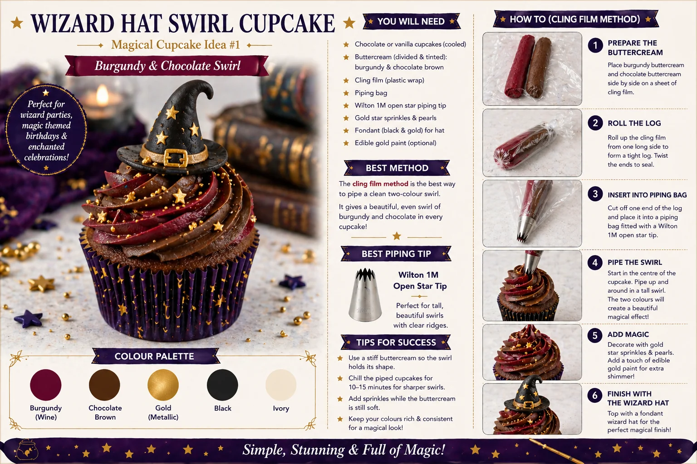
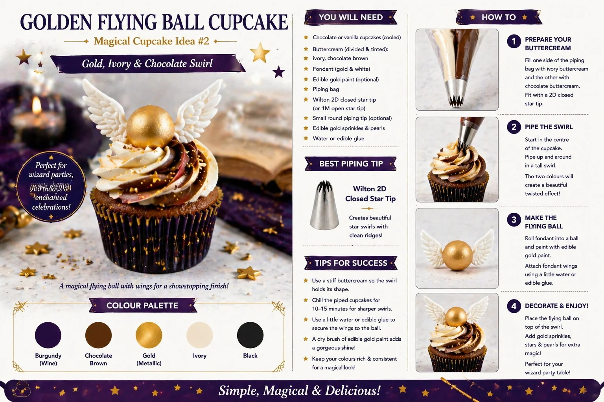

Wizard cupcakes are a fun way to create a magical party table without needing complicated cake decorating skills. With rich colours, gold sprinkles, little hat toppers, flying ball decorations, candles, books and star details, they can make a children's birthday table feel dramatic, cosy and full of imagination.
At Little Moment Studio, our focus is balloon styling and celebration setups. We do not make cakes or cupcakes ourselves, but we know cupcakes are often part of a beautifully styled party table. These ideas are designed as inspiration for a magical dessert table that can complement balloon displays, backdrops and party styling.
If you would like cupcakes or a cake to match your balloon display, we are happy to recommend a trusted local cake maker.
This guide covers two beginner-friendly wizard cupcake designs:
- Wizard Hat Swirl Cupcakes
- Golden Flying Ball Cupcakes
Why Wizard Cupcakes Work So Well for Party Tables
Wizard cupcakes work beautifully because the colours are rich and dramatic. They look especially good with burgundy, gold, black, chocolate brown and ivory balloon styling.
| Element | Why It Works |
|---|---|
| Burgundy and gold | Creates a magical, luxurious look |
| Black and chocolate brown | Adds depth and drama |
| Stars and pearls | Add sparkle without being too complicated |
| Wizard hats | Instantly create the magical theme |
| Flying ball toppers | Add height and movement |
| Candles, books and props | Help build the enchanted table style |
This theme works especially well for children's birthdays, magical party tables, school-of-magic inspired celebrations and cosy autumn or winter parties.
| Design | Style | Difficulty | Best For |
|---|---|---|---|
| Wizard Hat Swirl Cupcake | Tall, dramatic, two-colour swirl | Easy | Height and magical impact |
| Golden Flying Ball Cupcake | Soft swirl with gold topper | Easy | Sparkle and movement detail |
Wizard Hat Swirl Cupcakes

The wizard hat swirl cupcake is the main statement design. It uses a burgundy and chocolate two-colour buttercream swirl, finished with gold stars and a small fondant wizard hat. This design gives height, colour and instant magical style.
What You Will Need
| Item | Purpose |
|---|---|
| Chocolate or vanilla cupcakes | Cupcake base |
| Burgundy buttercream | Main colour for the magical swirl |
| Chocolate buttercream | Adds depth and contrast |
| Cling film | Used for the two-colour swirl method |
| Piping bag | Holds the buttercream log |
| Wilton 1M open star tip | Creates the tall swirl |
| Gold star sprinkles | Adds sparkle |
| Gold pearls or nonpareils | Optional finishing detail |
| Black fondant | For the wizard hat |
| Gold fondant or edible gold paint | For hat buckle detail |
Best Piping Tip
Use a Wilton 1M open star tip. It creates a tall swirl with defined ridges that gives the wizard hat a strong base to sit on and shows the burgundy and chocolate colours clearly. For more on piping tips, see our beginner piping tips guide.
Best Method: Cling Film Two-Colour Swirl
Use the cling film method to pipe both colours through one bag. Place the burgundy and chocolate buttercream side by side on cling film, roll into a log, then place inside the piping bag. This gives a clean two-colour swirl with the colours coming through evenly.
How to Make Wizard Hat Swirl Cupcakes
- Bake and cool the cupcakes. Let them cool completely before decorating. Chocolate cupcakes work especially well with this theme, but vanilla also works for a lighter base.
- Prepare the buttercream. Make a firm buttercream and divide into two bowls. Colour one bowl burgundy or deep wine red and use chocolate buttercream for the second colour.
- Prepare the cling film log. Lay a large sheet of cling film flat and pipe or spoon both colours side by side in equal lines. Roll into a log, twist the ends and snip one end.
- Place in the piping bag. Fit the Wilton 1M tip and place the log inside with the cut end facing down towards the nozzle.
- Pipe the swirl. Start at the outside edge and pipe around the cupcake in a circle, working inwards and upwards into a tall swirl.
- Add gold details. Scatter gold star sprinkles and pearls while the buttercream is still soft so they adhere to the swirl.
- Add the wizard hat. Press a small fondant wizard hat gently into the top of the swirl so it sits securely without flattening the buttercream.
Colour Palette
| Colour | Use |
|---|---|
| Burgundy / wine | Main magical buttercream colour |
| Chocolate brown | Second swirl colour |
| Gold | Stars, pearls, buckle and sparkle details |
| Black | Wizard hat topper |
| Ivory | Optional contrast for sprinkles or cupcake cases |
Colour tip
This palette works beautifully with burgundy, black and gold chrome balloons. The deep colours of the cupcakes echo the dramatic balloon styling without needing to use any branded characters or logos.
Golden Flying Ball Cupcakes

The golden flying ball cupcake is a softer but still magical design. It uses an ivory and chocolate buttercream swirl, topped with a gold fondant ball and small white wings. This gives the cupcake a sense of movement and works well displayed alongside the taller wizard hat cupcakes.
What You Will Need
| Item | Purpose |
|---|---|
| Chocolate or vanilla cupcakes | Cupcake base |
| Ivory buttercream | Main swirl colour |
| Chocolate buttercream | Contrast swirl colour |
| Piping bag | Holds the buttercream |
| Wilton 2D closed star tip | Creates the soft rosette swirl |
| Gold fondant or modelling paste | Makes the flying ball |
| White fondant or modelling paste | Makes the wings |
| Edible gold paint or lustre dust | Adds metallic finish to the ball |
| Water or edible glue | Attaches the wings to the ball |
| Gold sprinkles or pearls | Finishing detail |
Best Piping Tip
Use a Wilton 2D closed star tip. This creates a soft swirl with neat ridges — slightly flatter and more elegant than a tall 1M swirl — which makes a stable base for the golden flying ball. A Wilton 1M will also work if you prefer a taller swirl.
How to Make Golden Flying Ball Cupcakes
- Bake and cool the cupcakes. Cool completely — warm cupcakes will soften the buttercream and make the topper less stable.
- Prepare the buttercream. Use ivory for one colour and chocolate for the other. You can use the cling film method again or simply fill one side of the bag with each colour.
- Pipe the swirl. Fit the Wilton 2D tip and pipe a swirl from the outside edge inwards. The finished swirl should be firm enough to hold the topper.
- Make the golden ball. Roll a small piece of gold fondant or modelling paste into a ball. If using plain fondant, paint it with edible gold paint or edible lustre dust. Let it firm slightly before adding wings.
- Make the wings. Cut or shape two small wings from white fondant. You can shape them by hand, use a wing mould or a small feather cutter. Attach one wing to each side of the gold ball using a tiny amount of water or edible glue.
- Add the topper. Place the golden flying ball on top of the swirl and press gently into the buttercream so it stays in place.
- Finish with gold details. Add gold sprinkles, pearls or tiny stars around the topper. Keep the decoration minimal so the flying ball remains the focal point.
Colour Palette
| Colour | Use |
|---|---|
| Ivory | Main buttercream colour |
| Chocolate brown | Swirl contrast |
| Gold | Flying ball, sprinkles and star details |
| White | Wings |
| Black | Optional cupcake cases |
Display tip
This design looks especially good on a black or gold cake stand. The ivory and chocolate swirl is softer than the dark wizard hat cupcakes, so the two designs create a good contrast when displayed together on the same table.
Where to Find Wizard Cupcake Decorations
Both designs use handmade or moulded fondant toppers that are widely available from UK cake decorating suppliers.
Wizard Hat Toppers
Look for a small wizard hat or witch hat mould or cutter from UK cake decorating suppliers including The Cake Decorating Company, Cake Stuff and Etsy UK. Check the size carefully — around 6cm high is more suitable for cupcakes than larger toppers designed for celebration cakes. Always confirm whether the topper is edible, food-safe or purely decorative before using it on cupcakes.
Useful search terms: wizard hat fondant mould, witch hat cupcake topper mould, wizard hat cookie cutter fondant, magic hat cupcake topper
Flying Ball Wing Toppers
Search for fondant wing toppers, angel wing moulds, feather moulds or gold wing cupcake toppers from Etsy UK and cake decorating suppliers. Handmade fondant wing toppers are available in white, gold and silver. Note that some toppers may contain cocktail sticks or skewers for support — always remove these before serving, especially to children.
Useful search terms: gold wing cupcake toppers, feather fondant mould, angel wing silicone mould, fondant wing toppers white
Finishing Details
Gold star sprinkles, edible gold pearls, burgundy cupcake cases and black cupcake cases are available from The Cake Decorating Company, Lakeland, Cake Stuff and Amazon UK.
Styling the Magical Dessert Table
Wizard cupcakes work best when the whole dessert table uses the same rich colour palette. A strong wizard colour palette could be: burgundy, black, gold, chocolate brown and ivory.
- Burgundy and black balloon garland
- Gold chrome balloons
- Star confetti and scatter
- Old books, candles or LED candles
- Potion-style bottles
- Scrolls, feathers and owl props
- Castle or stone wall backdrop
- Black cake stands and gold trays
- Dark florals and fairy lights
For more on building a coordinated party table, see our guide to how to style a dessert table for a children's party.
Suggested Cupcake Box
Box of 12:
| Quantity | Design |
|---|---|
| 6 | Wizard Hat Swirl Cupcakes |
| 6 | Golden Flying Ball Cupcakes |
Box of 6:
| Quantity | Design |
|---|---|
| 3 | Wizard Hat Swirl Cupcakes |
| 3 | Golden Flying Ball Cupcakes |
Beginner Tips for Better Results
- Use firm buttercream. If the swirl collapses, chill the buttercream briefly before piping.
- Choose the right topper size. Large toppers can overwhelm a cupcake. Look for moulds or cutters around 6cm for a cupcake-friendly result.
- Stick to a controlled palette. Burgundy, gold, black, chocolate and ivory give a premium look. Too many colours dilute the drama.
- Check all decorations before using. Some toppers are decorative only — confirm what is edible and what needs removing before serving.
- Add heavy toppers to chilled buttercream. If the topper is heavy, chill the piped swirl for 10–15 minutes first so it holds better.
- Make toppers ahead. Fondant hats and flying balls can be made the day before and left to firm overnight. This actually makes them easier to handle.
- Coordinate the cupcake cases. Burgundy or black cupcake cases make a noticeable difference to how considered the finished display looks.
Your Questions Answered
Can these cupcakes be made the day before?
Yes. Store them in a covered cupcake box or airtight container in a cool, dry place. Fondant toppers are best kept away from humidity as they can become sticky. Making the hats and flying ball toppers the day before and letting them firm overnight is actually recommended — they are much easier to handle once set.
How do you transport wizard cupcakes?
Use a cupcake box with inserts. The wizard hat cupcakes are taller, so check the box has enough height clearance. If the fondant toppers are delicate, consider adding them after transport rather than before. Keep cupcakes away from heat, direct sunlight and warm cars.
What if the fondant hat keeps falling off?
The swirl may be too soft. Chill the piped cupcake for 10–15 minutes before adding the topper. You can also press the hat base very gently into the buttercream to give it more contact area, being careful not to flatten the swirl.
What colours work best for a wizard party table?
Burgundy, black, gold, chocolate brown and ivory create a rich, magical look. This palette works beautifully alongside burgundy and gold balloon garlands and black cake stands without needing any specific branded characters or logos.
The wizard hat cupcake gives height and drama to the table, while the golden flying ball cupcake adds sparkle and movement. Together, the two designs create a display that feels genuinely magical — rich in colour, full of detail and instantly recognisable as a themed celebration table.
For more children's party cupcake ideas, see our guides to birthday cupcake ideas and Halloween cupcake ideas. For matching cupcakes to your balloon display, see our guide to matching cupcakes with your balloon display.
Planning a Magical Party in Sittingbourne or Kent?
Little Moment Studio creates coordinated balloon displays and celebration setups across Sittingbourne and Kent. We can also recommend a trusted local cake maker to complete your magical dessert table.